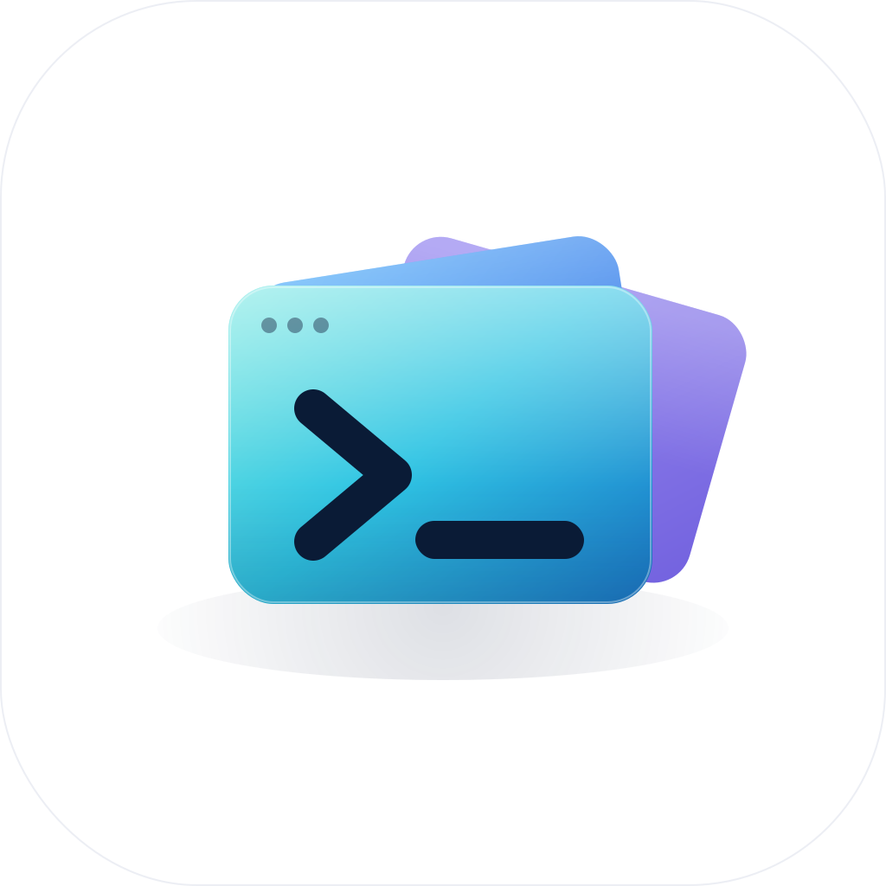

一个项目，所有会话
JSONL、SQLite、zstd 的差异收在适配层；只索引元数据与可恢复性，不复制对话。
atlas-apimain3 运行中
修登录 · SSO 回调死循环运行中
补认证测试 · 三个用例运行中
调研依赖升级等你确认
grpc 超限分群拉取失败Transcript is gone
One window. Six agents. Zero cloud.
把六个 Agent 的会话按项目收好；worktree 隔离并行，琥珀色提醒谁在等你。数据留在本机。
终端还在，只是终于有了目录。

看得见、隔得开、回得来。不接管数据，只把并行的现场收拾干净。
JSONL、SQLite、zstd 的差异收在适配层；只索引元数据与可恢复性，不复制对话。
三个 Agent 三个目录，互不覆盖；跨仓库还能组成工作树组，共用一条分支。
琥珀 = 等你确认。读终端标题判断状态，不装 hook。
四区变更、行内 / 并排 diff；AI 可以写提交信息，按不按提交由你。
空查询每项目 3 条可恢复会话；查询同时搜会话与文件。↑↓ 选择，↩ 打开。
六个内置适配器，外加任意 JSON 插件，共用一个项目视图。
一份 JSON 描述 CLI；写 → 检查 → 实测，通过才允许接入。
默认不联网，无账号、无遥测。索引只存元数据，SQLite 只读；网络只用于你配置的 AI 端点与插件链接。
每个终端 Agent 都会把状态写进标题。CodeBay 读标题判断谁在等你——不装 hook、不改 shell。
阈值默认 8 秒，可调 3–60 秒；纯 shell 永不提醒，看过的会话不再打扰。

1Claude Code 在等你确认atlas-api · 修登录 · SSO 回调死循环
Recorded, not marketed.
本机样本，条件写在每个数字下面。
另有约 4.6 万行自研 Swift、55 个测试源文件与 39 个离屏 UI 场景。
点击陆地，留下你的光点。预置光点为示意数据。
下载 DMG 或运行 install.sh；首次打开请右键「打开」。
选一个代码目录，索引已有会话；Agent CLI 需自行安装并登录。
一句话可同时交给几个 Agent；关掉窗口也不丢会话。
不会。只读索引各 Agent 的原生会话文件，不复制、不改写；会话由各 CLI 自己管理。扫描 SQLite 只读，表名列名先校验再引用。
默认不会：没有账号、没有遥测。只有你主动使用内置 AI 或导入 https 插件时，才会连接你配置的地址。
内置 Claude Code、Codex、OpenCode、DeepSeek、OMP、Pi 六个适配器；其他 CLI 用一份 JSON 插件接入，添加前会在本机实测。
不会。一条分支一份 Git worktree；跨仓库任务可组成「工作树组」，共用一条分支与一个目录。这是软隔离，不是安全沙箱。
启动时用登录 shell 探测真实 PATH，并叠加常见安装目录；解析不到时会给出带解决方法的错误。
无法恢复。CodeBay 会标成不可恢复并说明原因（例如 Transcript is gone），而不是启动一个注定失败的进程。
不会。Git 能力止于 commit：没有 push、pull、merge、rebase、PR 或冲突解决编辑器；暂存是文件级，diff 与预览只读。
预览版是 ad-hoc 签名，macOS 会提示「无法验证开发者」。首次打开请右键「打开」，或用 install.sh 按芯片选择安装包并完成签名安装。正式签名与公证仍在筹备中。
macOS 14+ · 未签名测试版。Apple Silicon 与 Intel 分开编译。
curl -fsSL https://go-kenka.github.io/codebay-site/install.sh | bash -s -- --allow-unsigned
脚本按芯片下载、ad-hoc 签名并清除隔离属性；仅在你信任该构建时使用。